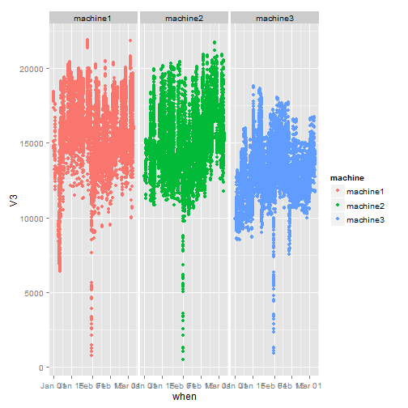
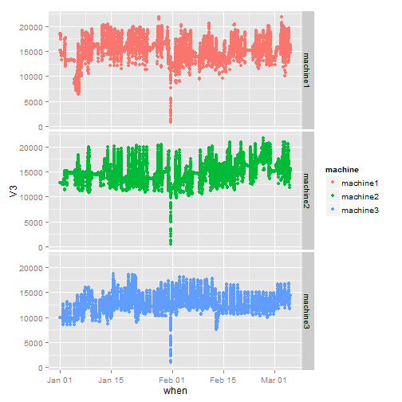

- Applications hosted on virtual machines
- Initial estimate of how much memory we needed per hosted application was somewhat high
- Wanted data to narrow down what the requirements really are
Anne Troop
WebSphere Admin
2015-01-01 00:00:01 18312 11779
2015-01-01 00:01:01 18360 11730
2015-01-01 00:02:01 18414 11677
2015-01-01 00:03:01 18431 11659
2015-01-01 00:04:01 18433 11657
2015-01-01 00:05:01 18436 11654

